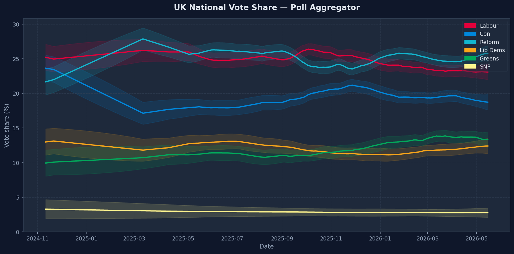
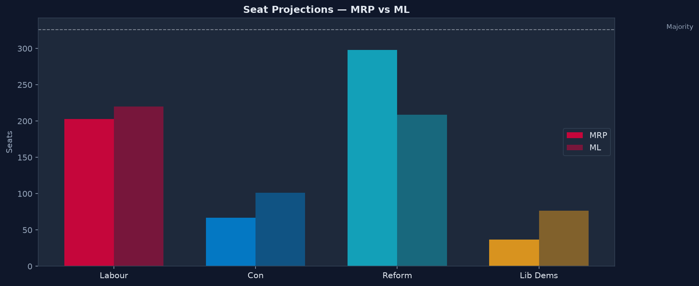
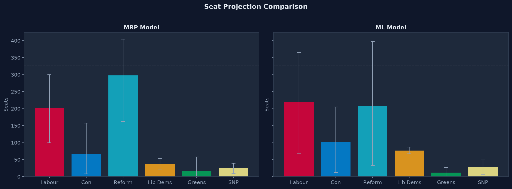

Kalman-filter poll aggregator · MRP seat model · XGBoost swing benchmark · Monte Carlo projections
The model draws on four primary data sources. All are publicly available except the BES microdata, which requires a short registration form. No manual data entry is used — the pipeline downloads and processes everything automatically.
All post-2024 Westminster polls scraped from the Wikipedia "Opinion polling for the next United Kingdom general election" page. Footnote markers stripped by regex, multi-format fieldwork dates parsed, rows deduplicated on (pollster, fieldwork end, sample size). Scottish subsample columns preserved where published.
Post-election panel wave (Wave 25+). ~30,000 respondents with vote intention, recalled 2024 vote, Brexit vote, age, sex, education, ethnicity and Westminster constituency code. Freely available after registration at britishelectionstudy.com.
Constituency-level marginal distributions for age (TS007), sex (TS008), highest qualification (TS067) and ethnicity (TS021). Downloaded programmatically from the Nomis web API using the 2024 Westminster parliamentary boundary geography type. Iterative Proportional Fitting (IPF) synthesises the joint demographic distribution needed for MRP poststratification.
Party vote shares for all 650 constituencies at the 2017, 2019 and 2024 general elections. Also includes % Leave 2016, % degree-educated, median income and urban/rural classification — the geographic predictors for the MRP cross-level interactions and the XGBoost constituency features.
Raw polls are noisy: different pollsters systematically lean towards different parties (house effects), sample sizes vary, and the underlying true opinion moves gradually. A Kalman filter is the natural solution — it maintains a running latent state (true support) and updates it as each new observation arrives.
For each party independently: latent support x_t follows a random walk (x_t = x_{t-1} + w_t, w_t ~ N(0, σ²_process)). Each poll is an observation: y = x_t + house_effect[pollster] + ε, ε ~ N(0, σ²_obs / n) scaled by effective sample count.
House effects are unknown parameters, not latent states, so vanilla Kalman filtering can't estimate them directly. An Expectation-Maximisation loop alternates between (E) running the Rauch-Tung-Striebel smoother with current house-effect estimates and (M) re-estimating house effects as the mean residual between each pollster's polls and the smoothed state. Iterated to convergence (<0.0001pp change).
Each party is filtered independently (preserves tractability), then after each EM iteration party shares are renormalised to sum to 100%. The covariance across parties is estimated from cross-poll residuals and used in the Monte Carlo seat projector to preserve anti-correlations (if Lab goes up, Con tends to go down).
The full Kalman smoother state is serialised to data/aggregator_state.pkl after each run.
Weekly updates load the existing state and extend the filter forward from the most recent poll date,
avoiding a full refit from 2024 each time. A full refit is triggered monthly or on demand.

Vote share trend chart will appear here once the pipeline has run.
Smoothed national vote-share estimates with 90% confidence intervals. Ribbons reflect the Kalman filter's posterior variance at each date.
Multilevel Regression and Poststratification (MRP) is the gold-standard method for small-area estimation from survey data. It was developed by Gelman and Little (1997) and has been used by YouGov and others to produce constituency-level forecasts from national polls. The method has two stages.
One binary logistic mixed-effects model per party. Fixed effects: age group (5 bands), sex,
education (degree / no degree), ethnicity (White British / other), recalled 2024 vote,
Brexit vote 2016, % Leave, % graduate, median income (constituency-level cross-level interactions).
Random effects: region intercept and constituency intercept, capturing geographic clustering after
demographics are controlled. Fitted with statsmodels.
SNP models are restricted to Scottish BES respondents and calibrated to Scottish constituency seats (S-prefix codes). Plaid Cymru models are restricted to Welsh respondents and Welsh seats (W-prefix codes). All non-SNP models include an is_scotland binary fixed effect; all non-PC models include is_wales, capturing the different party systems without treating them as outliers.
For each constituency, the IPF joint distribution (40 demographic cells per seat) is used to weight individual-level predictions: P̂(vote | constituency) = Σ_cells n_cell × P(vote | demographics, constituency) / N_constituency. This produces a constituency-level vote-share estimate that correctly accounts for the local demographic mix.
Constituency shares are rescaled so their electorate-weighted national aggregate matches the Kalman filter's current estimate. This propagates the poll aggregator's uncertainty into the constituency level and ensures the model stays tethered to the most recent polling evidence. Scotland and Wales are calibrated separately where regional subsample estimates are available.
As a benchmark and robustness check, an XGBoost model is trained to predict constituency-level swing (change in vote share from the prior election). This requires no individual-level survey data — only constituency demographic aggregates and past results. It is trained purely on historical data and evaluated on the 2024 election as a held-out test.
Trained on constituency swings at the 2019 election (change from 2017); tested on the 2024 election (change from 2019). This is the only valid temporal split that avoids data leakage. With ~650 seats per election, the training set has approximately 1,300 constituency-election observations.
National swing from the poll aggregator (the key predictor — the model learns how each seat diverges from the national trend); prior election shares; % Leave 2016; % degree-educated; % non-white; median income; urban/rural classification; 2024 majority (seat vulnerability); region (label-encoded); historical swing volatility.
The trained model predicts the swing each seat experiences relative to the national swing from the current poll aggregator. Predicted swings are added to the 2024 baseline shares. Heavy regularisation (max_depth=4, λ=2.0) prevents overfitting to the small training set.
| Model | Method | Data required | 2024 holdout RMSE | Notes |
|---|---|---|---|---|
| MRP | Multilevel logistic + poststratification | BES microdata + Census | Pending | Gold-standard; captures individual demographics |
| XGBoost | Constituency-level swing regression | Aggregate results only | Pending | Benchmark; no survey data needed |
| UNS (baseline) | Uniform national swing applied to all seats | National polls only | — | Naive baseline for comparison |
The Kalman filter's current estimate is a point estimate with uncertainty. To translate that uncertainty into seat-count distributions, a Monte Carlo simulation is used.
10,000 national vote-share vectors are drawn from a multivariate normal distribution parameterised by the Kalman filter's current means and cross-party covariance matrix. The covariance captures the anti-correlation between parties — a draw giving Labour a higher share tends to give Conservatives a lower share. Each draw is renormalised to sum to 100%.
For each Monte Carlo draw, constituency-level MRP and ML shares are rescaled so their electorate-weighted national aggregate matches the drawn national shares. This propagates national uncertainty into the constituency level without re-running the full model for each draw.
Each constituency is assigned to the party with the highest predicted share (first-past-the-post). Seat totals are accumulated across all 650 constituencies. The resulting distribution of seat counts (one per draw) gives the mean, 10th percentile and 90th percentile reported on the tracker.

Seat distribution chart will appear here once seat models are fitted.
Distribution of projected seat counts across 10,000 Monte Carlo draws. Solid bars show MRP; hatched bars show the XGBoost benchmark. The vertical line marks the 326-seat majority threshold.

Model comparison chart will appear once both models are fitted.
MRP vs XGBoost mean seat projections with 10th–90th percentile bars. Labour, Conservative, Reform and Lib Dems shown.
The scraper relies on the Wikipedia polling table's HTML structure, which can change without notice. The pipeline includes robust fallback parsing but may require updates after Wikipedia reformats the page.
Only two historical elections (2017 and 2019) provide training data for the swing model — approximately 1,300 constituency-election rows. Heavy regularisation mitigates overfitting but the benchmark remains limited by the small training set. Adding 2015 data would help.
Northern Ireland uses a completely different party system (Sinn Féin, DUP, Alliance, SDLP, UUP). The 18 Northern Irish constituencies are excluded from the current model; seats are modelled for England, Scotland and Wales only (632 seats total).
Each party's MRP regression is fitted independently, so constituency vote shares do not automatically sum to 1. Post-hoc row normalisation is applied before seat projection but this does not fully respect the multinomial constraint. A joint Dirichlet-based model would be more principled.
The 2021 Census is the most recent available. Constituency demographics shift gradually between censuses; areas with significant demographic change (e.g. university towns) may be mis-calibrated by 2026. The next census will be in 2031.
Adding a full Bayesian MRP implementation (PyMC), incorporating tactical voting signals, and extending the ML training set with 2015 data would improve accuracy. Longer-term: seat-level betting market integration for model calibration.